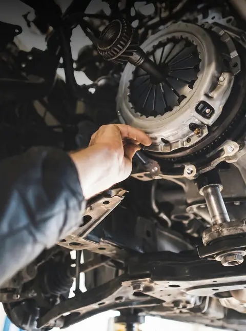

Reparații motor în Chișinău
Reparațiile de motor încep cu o diagnoză corectă: căutăm cauza zgomotului, a scurgerii sau a pierderii de putere înainte să desfacem ceva. La AutoRepublic schimbăm kituri de distribuție, garnituri și pompe și facem reparații capitale, cu piese originale sau echivalente de calitate.

Când să vii
- Motorul face zgomote metalice sau bătăi
- Pierde ulei sau antigel, apar pete sub mașină
- Fum albastru, alb sau negru la evacuare
- Temperatura urcă peste normal
- A trecut intervalul de schimb al distribuției
Ce include
- Kit distribuție și pompă de apă
- Garnituri: chiulasă, capac culbutori, baie de ulei
- Reparația sistemului de răcire
- Verificarea compresiei și a etanșeității
- Reparații capitale de motor
Preț orientativ
Prețul final îl afli după diagnoză și îl aprobi înainte să începem.
- Schimb kit distribuție (manoperă)de la … lei
- Înlocuire garnitură de chiulasă (manoperă)de la … lei
Cum lucrăm
- Te programeziOnline, pe WhatsApp sau la telefon. Alegi ziua și ora.
- Facem diagnozaVerificăm mașina și găsim cauza, nu doar simptomul.
- Aprobi prețulÎți spunem ce e de făcut și cât costă. Lucrăm doar după ce spui da.
- ReparămCu piese originale sau echivalente de top, după bugetul tău.
- Predăm mașinaÎți explicăm ce am făcut și când e următoarea verificare.
Întrebări frecvente
Când se schimbă distribuția?
La kilometrajul sau la numărul de ani indicat de producător, de regulă între 60.000 și 120.000 km. O curea ruptă poate distruge motorul, așa că nu amâna schimbul.
Merită reparat motorul sau e mai bine schimbat?
Depinde de starea lui și de valoarea mașinii. După diagnoză îți prezentăm ambele variante, cu costuri, și decizi tu.
Folosiți piese originale?
Lucrăm cu piese originale sau echivalente de top, după preferința și bugetul tău. Îți spunem diferența de preț înainte de comandă.
Programează-te în 2 minute
Alegi lucrarea, ziua și ora. Te sunăm ca să confirmăm.